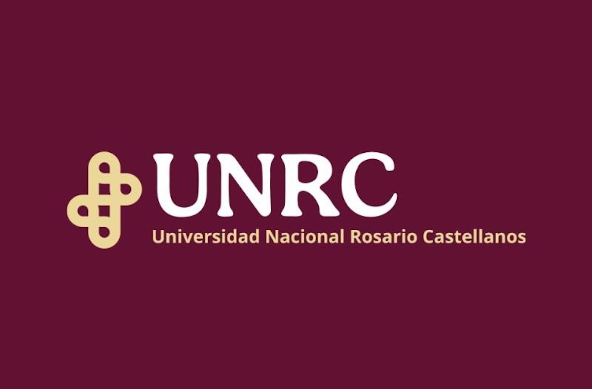
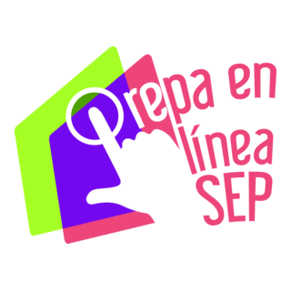
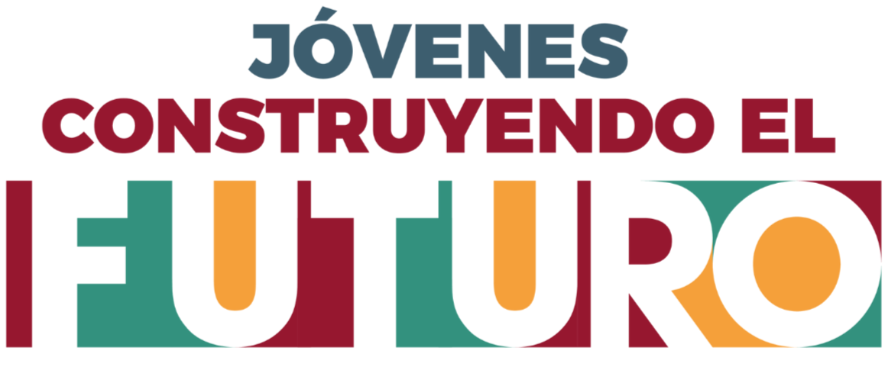
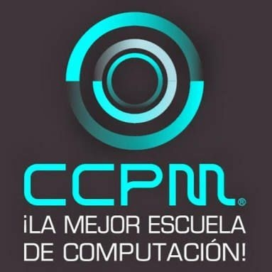

Estudios

Licenciatura en Mercadotecnia y Ventas
Universidad Rosario Castellanos
Modalidad a distancia | Iniciada en junio de 2023

Preparatoria en Línea
Prepa en Línea SEP
Marzo 2018 - Octubre 2020

Curso Avanzado de Photoshop e Illustrator
Coderhouse
Duración: 2 meses | Finalizado en agosto de 2023

Capacitación en Ciencia y Tecnología
Jóvenes Construyendo el Futuro
Julio 2021 - Julio 2022

Curso de Ofimática
Centro Computacional de México
Duración: 1 año | Finalizado en agosto de 2015